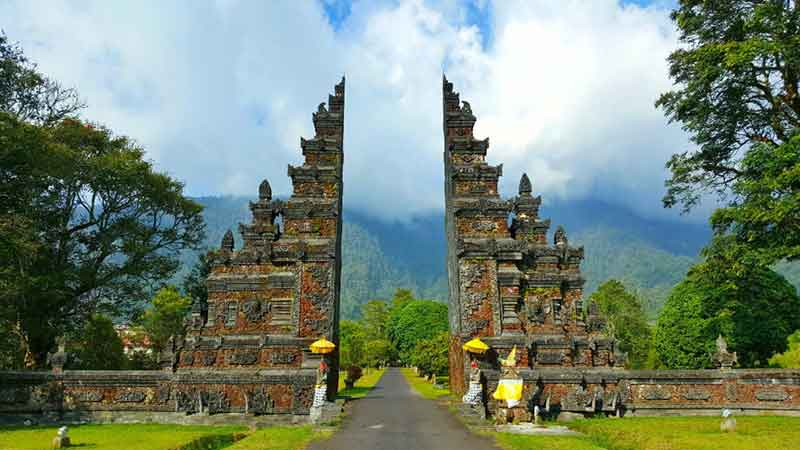

📷Instagramable Bali Tour📷
Tirta Gangga
|
Tirta Gangga Bali merupakan taman air peninggalan Kerajaan Karangasem dan dibangun oleh Raja Karangasem pada tahun 1946. Nama taman tirta gangga memiliki sebuah arti air suci dari sungai gangga India.
Dan pembangunan taman ini juga dimaksudkan sebagai penghormatan pada masyarakat yang memeluk agama Hindu. Akibat letusan gunung agung sekitar tahun 1963, kawasan taman Tirta Gangga sempat mengalami renovasi besar-besaran.
|
||||||
|
Salah satu hal yang membuat Pura Uluwatu menjadi tempat wisata di Bali yang Instagramable adalah lokasinya yang terletak di pinggir tebing setinggi 70 meter di atas laut.
Pemandangan dari sini bener-bener unik dan luar biasa - kamu bisa melihat laut lepas di sepanjang horizon dan ombak yang ganas menghantam tebing di bawah pura.
Selain itu pertunjukan budaya khas Bali yang terkenal sampai kemancanegara adalah pertunjungkan seni tari Bali. Salah satu pertunjukan seni tari yang dapat anda lihat dikawasan Uluwatu adalah tari Kecak Bali.
|
Kamu juga bisa melihat pertunjukkan Tari Kecak yang digelar sore hari hingga matahari terbenam. Pertunjukkan ini digelar setiap hari dan kamu bisa membeli tiketnya diKlook. Menonton dengan latar matahari terbenam adalah sebuah pengalaman yang gak terlupakan - dan momen terbaik untuk mengambil foto juga!
Selain itu,Rekomendasikan untukmu mengambil foto dengan latar tebing Pura Uluwatu yang luar biasa.
Karena ramainya minat wisatawan yang ingin menonton tari Kecak Uluwatu, sangat sering wisatawan yang walk-in (tanpa melakukan pemesanan) kehabisan tiket tari Kecak Uluwatu. Maka itu, jika anda berencana menonton tari Kecak Api di Uluwatu, ada baiknya anda memesan tiket tari Kecak Uluwau 1 hari sebelum tanggal kunjungan anda.
- Open: 09.00 - 18.00
- Alamat: Jalan Raya Uluwatu, Pecatu, Badung, Bali 80361, Indonesia
Handara Gate
 |
|
|
Handara Gate sebenarnya merupakan bangunan berupa pintu gerbang biasa. Gerbang ini juga bukan bagian dari peninggalan sejarah. Bahkan, bangunan ini hanya berupa pintu gerbang menuju area resort serta golf yang dikenal dengan nama Handara Golf and Resort. Hanya saja, desain bangunan gerbang itu sengaja dibuat dengan desain tradisional Bali yang dikenal dengan sebutan candi bentar. |
Bali Swing Bongkasa Pertiwi
|
|
Wanagiri Hidden Hills
|
|

 Namun, Anda yang ingin berfoto di setiap spot yang ada du Wanagiri Hidden Hills wajib membayar biaya tambahan. Sebesar Rp.10.000 saja Anda sudah mendapatkan foto terbaik Anda dengan panorama alam yang indah.
Namun, Anda yang ingin berfoto di setiap spot yang ada du Wanagiri Hidden Hills wajib membayar biaya tambahan. Sebesar Rp.10.000 saja Anda sudah mendapatkan foto terbaik Anda dengan panorama alam yang indah.Pura Lempuyangan Luhur

|